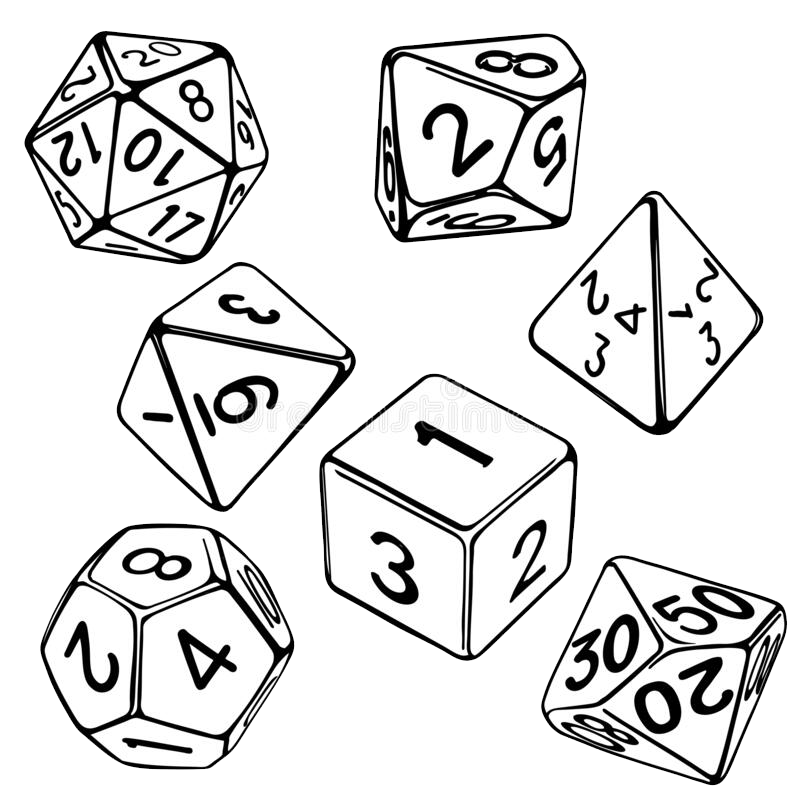

O que é são D4, D6, D8, D10, D12 e D20?
Todos esses nada mais são do que dados para RPG. O “D” significa dado e o número que o sucede é a quantidade de faces que o dado possui. Dessa forma, o D20 possui 20 faces, o D4 possui 4 faces e assim por diante.
Não existe um só tipo de dado para RPG. Eles podem ser encontrados em metal, acrílico, com efeitos metálicos, emborrachados, em veludo, de madeira, marmorizados e até com inscrições élficas.
Esses são todos os dados para RPG que você pode encontrar para uma boa aventura. Salvo em algumas mesas, nas quais se utiliza também o dado da dezena, o qual possui em cada face uma dezena (10). E ainda mais raros e dificilmente necessários são os dados D30 e D100.
Quais dados para RPG de mesa são necessários?
Todos, dois, três ou até mesmo um. Não há regras para quantos dados você vai ou não precisar. O que de fato determina o número de dados para RPG em uma aventura é o sistema em que o game está inserido. Assim como suas particularidades, nível dos personagens, regras e até as ações a serem realizadas.
Onde encontrar dados para RPG?
O primeiro passo é ter certeza dos dados que você vai precisar. Afinal de contas existem até mesmo rpgs de mesa em que se pode usar o D6 comum. Enfim, depois de se certificar do que realmente vai precisar em termos de dados para RPG, inicie a sua busca pelo melhor local para adquiri-los.
Caso tenha amigos ou conhecidos que dividam o mesmo hobby, uma boa ideia é perguntar para eles sobre o local de compra. Eles provavelmente saberão te indicar um local de confiança e com um preço acessível.
Se eles não souberem como te ajudar, é uma boa alternativa procurar por lojas ou centros especializados em cultura geek ou RPG na sua cidade. Se isso também não for uma opção viável apele para a sempre boa internet. Principalmente em grandes sites de ecommerce ou aqueles mais voltados para itens da categoria. Se achar mais complicado encontrar entre os sites nacionais, ainda existe a opção de importar os dados para RPG.
Está sem dinheiro e não quer adiar ainda mais a sua épica aventura? Então procure moldes! Busque por moldes dos dados para RPG necessários e os imprima, recorte e cole. É a opção mais bonita, durável e divertida? Não! Mas pode ser um excelente quebra galho até você adquirir bons e verdadeiros dados para RPG. Agora, se você não é fã de artesanato, existem vários aplicativos que podem quebrar o seu galho.